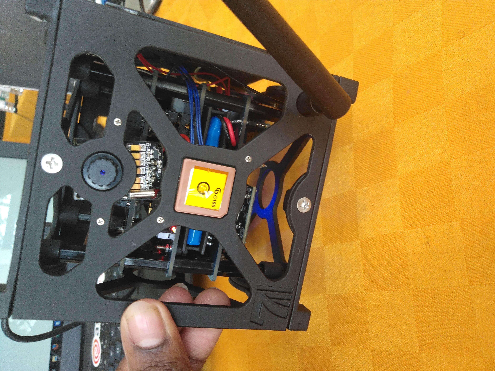

Janus is a model cube satellite of dimension 1U. The name Janus comes from the Roman god of doorways who looks both into the future, and the past. The system was named this way because it uses past data as a baseline to predict future events.

This project was developed to demonstrate the application of cube satellites in disaster prediction. Data collected from the satellite was sent to the ground station where it was automatically processed and then channelled to pre-trained predictive models. In case an impending disaster is detected, the ground station sends out alerts to the relevant authorities, and to residents of the area in potential danger, indicating the level of threat.